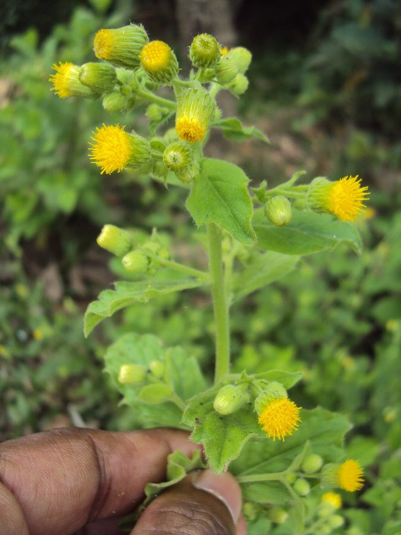

कुकरौंधाKukronda
Blumea lacera · Asteraceae · FLR-0219

- Scientific name वैज्ञानिक नाम
- Blumea lacera (Burm.f.) DC.
- Family कुल
- Asteraceae
- Hindi हिंदी
- कुकरौंधा
- Local names स्थानीय नाम
- kukronda, kukraundha, kukrondha, kukuronda, blumea
- Status here यहाँ की स्थिति
- native
- Movement आवागमन
- Resident, here all year
- IUCN IUCN
- not evaluated
- Review समीक्षा
- audited and independently read
When to look कब देखें
Present all year. साल भर मौजूद।
Uses and possibilities उपयोग और संभावनाएँ
“Traditional medicine” means a documented traditional use, not a claim that it works. Nothing on this page is medical advice.
Drawn from the documented uses in the profile below, where each is labelled traditional, current or a research lead. All uses →
कुकरौंधा / Blumea
Blumea lacera (Burm.f.) DC. — Asteraceae
कुकरौंधा (भँवरा, बोरिलौ) — मानसून आने के बाद सड़कों और खेतों पर अपने आप उग आने वाला एक तीव्र-गंध वाला पौधा। इसकी पत्तियाँ खुरदुरी और गंधयुक्त हैं — जब कोई इसे दबाता है तो तीव्र, कड़ी, सुगंध आती है, जिससे कुछ लोग नाक-भौंह सिकोड़ते हैं, पर दूसरों को पसंद है। गर्मियों में इसके पर-जैसे छोटे, पीले फूलों के समूह पर भँवरे (बड़ी मक्खियाँ) उतरते हैं — नाम यहीं से आया। पारंपरिक दवाई में इसे अस्थमा, खाँसी, पाचन समस्याओं में प्रयोग किया जाता है।
Quick Identification त्वरित पहचान
| Feature | Description |
|---|---|
| Habit | Annual or perennial herb, erect, 50–120 cm, aromatic, sticky-pubescent |
| Leaves | Alternate, obovate to broadly lanceolate, 5–15 cm, roughly textured, aromatic when crushed |
| Flowers | Small, bright yellow, numerous, crowded in dense, flat-topped clusters (corymbs) |
| Inflorescence | Distinctive flat-topped or slightly convex corymb, 5–10 cm diameter, terminal |
| Scent | Strong, camphoraceous, volatile odour from foliage and flowers |
| Receptacle | Hairy, sticky, glandular |
| Fruit | Small cypsela (seed-like fruit), crowned with a pappus (bristle-like calyx) |
Field tip: An aromatic herb with a strong, somewhat medicinal odour; leaves rough-textured and sticky when young. The dense, bright yellow flower clusters are distinctive and attractive to bees, wasps, and flies. The plant appears suddenly in monsoon wastelands. The strong scent persists long after the plant dries.
Morphology आकारिकी
| Measurement | Range |
|---|---|
| Plant height | 50–120 cm |
| Leaf length | 5–15 cm |
| Leaf width | 2–6 cm |
| Flower head diameter | 0.3–0.5 cm |
| Corymb (cluster) diameter | 5–10 cm |
| Cypsela length | 2–3 mm |
Habit: Erect annual or short-lived perennial herb, 50–120 cm tall; branching extensively; herbaceous, not woody; stems angular, sticky-pubescent (covered with fine, sticky hairs).
Leaves: Alternate, obovate to elliptic or broadly lanceolate, 5–15 cm × 2–6 cm; both surfaces rough-textured (scabrous), covered with minute sticky hairs; venation palmate or pinnate; margin irregularly coarsely toothed or lobed; apex acute or obtuse; base gradually narrowed to the petiole; petiole 0.5–2 cm, winged, hairy. Leaves are highly aromatic; crushing releases a strong, camphoraceous (camphor-like), somewhat acrid odour.
Inflorescence: A terminal, flat-topped or gently convex corymb (racemose panicle of capitula), 5–10 cm diameter, composed of numerous small flower heads packed densely together.
Flower heads (capitula): Homogamous (all flowers in the head are of one type); small, 0.3–0.5 cm diameter. Florets small, bright yellow, numerous (20–40 per head); all florets bisexual and fertile (ray flowers absent). Bracts (phyllaries) in 2–3 series, linear, sticky-hairy. Receptacle hairy, slightly convex.
Fruits (cypselae): Small, 2–3 mm, obovoid, slightly compressed, brownish; crowned by a pappus of fine, hair-like bristles (5–10 mm), which aid wind dispersal. Each capitulum produces 20–40 seeds.
Root system: Fibrous, shallow; no specialized structures.
Volatile compounds: The plant contains volatile oils (α-pinene, limonene, camphor, and other terpenes); these confer the characteristic odour and are presumed to have bioactivity (antimicrobial, anthelmintic, repellent).
हिंदी: पत्तियाँ खुरदुरी, तीव्र गंध वाली। फूल पीले, सैकड़ों की संख्या में छोटे समूहों में। भँवरे और मक्खियाँ फूलों पर उतरते हैं। बीज बहुत छोटे, हवा से फैलते हैं।
Behaviour & Ecology व्यवहार और पारिस्थितिकी
Blumea lacera is a rapid-growing pioneer of monsoon wastelands, fallow fields, disturbed soils, and stream-side margins. The plant germinates in response to monsoon moisture and thrives in warm, moist conditions. It is drought-tolerant in the post-monsoon season but dies back during sustained cold or drought.
The strong volatile oils in the foliage are thought to serve multiple ecological roles: (1) allelopathy — inhibiting germination of competing plants in the immediate vicinity; (2) insect-deterrence — deterring small herbivores while (paradoxically) attracting certain insects; (3) pathogen resistance — showing antimicrobial properties in laboratory assays.
The flowers are visited extensively by pollinators, particularly flies, bees, and small wasps seeking nectar and pollen. The plant is entomophilous (insect-pollinated). The small, light seeds are readily dispersed by wind; the pappus (bristle-like calyx) aids flotation and wind carriage. A single plant can produce thousands of seeds.
The plant's ability to establish quickly in disturbed soils, combined with its competitive advantage from volatile-mediated allelopathy and its prolific seed production, makes it a successful pioneer in wastelands. However, it does not persist long in competition with more robust perennials and is easily suppressed by regular mowing or shading.
हिंदी: मानसून में तेज़ी से अंकुरित होता है। गंध वाला तेल — दूसरे पौधों को रोकता है। फूलों पर भँवरे-मक्खियाँ उतरते हैं। एक पौधा हज़ारों बीज देता है। हवा से बीज दूर जाते हैं।
Life Cycle / Phenology जीवन चक्र
- Germination: June–July (monsoon onset); stimulated by high moisture and warm temperatures
- Vegetative growth: July–August; rapid height increase; plant reaches full size by early August
- Flowering: August–December; flowers produced continuously on the terminal corymb, which extends as the plant grows taller
- Seed set and dispersal: September–January; ripe seeds dispersed progressively as achenes mature
- Dormancy/death: Plant killed by sustained cold below 5 °C (not an issue in Basti's warm winters) or by sustained drought; some plants persist as rosettes into winter in favorable microsites
- Seed bank: Seeds remain viable in soil for at least 1–2 years; germination is temperature-dependent (15–30 °C optimal)
हिंदी: जून–जुलाई: अंकुरण। जुलाई–अगस्त: तेज़ी से बढ़ना। अगस्त–दिसंबर: फूल और बीज। सितंबर–जनवरी: बीज हवा से फैलना।
Agricultural / Human Relevance कृषि और मानव संबंध
Traditional medicinal use: Blumea lacera is recorded in traditional South Asian medicine systems (Ayurveda, Unani, and folk practice) under names including Bhangra (though some sources conflate it with Eclipta alba) and Kukaronda. Documented traditional uses include:
- Respiratory conditions: Root, leaf, and flower decoctions taken for asthma, cough, bronchitis, and wheezing. Some Ayurvedic texts suggest the volatile oils help clear bronchial secretions.
- Digestive complaints: Leaf and root preparations used traditionally for indigestion, bloating, flatulence, and loss of appetite — the volatile oils are thought to have carminative (gas-expelling) properties.
- Febrile illnesses: The plant is listed as a cooling (cooling) herb in some Ayurvedic texts; decoctions given during fever and as a diuretic.
- Skin complaints: Leaf paste applied to eczema, itching, and boils in folk practice.
- Parasitic infections: Some traditional practitioners report use for intestinal worms (anthelmintic action presumed from volatile oils).
These are traditional uses documented in historical and contemporary texts and village practice; no modern clinical trials have validated efficacy, and self-treatment is not advised.
Weed status: In cultivated fields, Blumea lacera is a minor weed, readily suppressed by competitive crops. It becomes a nuisance in fallow fields and wasteland margins, where it rapidly colonizes disturbed soils.
Research direction (as a lead, not a result): The volatile-oil composition of Blumea lacera from Indian populations is understudied. Gas-chromatography mass-spectrometry (GC-MS) analysis of essential oils from fresh leaves and flowers could characterize the volatile profile comprehensively. In vitro antimicrobial testing of aqueous and ethanolic leaf extracts against common respiratory pathogens (Pseudomonas aeruginosa, Staphylococcus aureus) and antifungal activity against Candida albicans could support or refute traditional respiratory and skin-related uses. The allelopathic potential of leaf volatiles against common crop species deserves investigation. The attraction of specific pollinator taxa to the flowers merits field observation and documented insect sampling.
Caution - Not for self-medication: Traditional uses are documented but not clinically validated. Respiratory, gastrointestinal, and skin conditions should be evaluated by a healthcare provider. Do not attempt self-treatment with plant preparations without professional guidance.
हिंदी: पारंपरिक: दमा, खाँसी, पाचन, बुखार में। आज: कुछ जगह सजावटी बेल या औषधि के रूप में उगाई जाती है। सावधानी: स्व-औषधि न करें।
Expected Locally स्थानीय रूप से अपेक्षित
Not a field record. Written from published accounts for eastern Uttar Pradesh. No confirmed local sighting yet — if you have seen it, that is what the atlas needs.
अभी तक स्थानीय पुष्टि नहीं। यह विवरण प्रकाशित स्रोतों से है, किसी अवलोकन से नहीं।
Blumea lacera is to be expected in wastelands, fallow fields, roadside margins, and stream banks throughout Basti and eastern Uttar Pradesh, particularly during the monsoon and post-monsoon season (July–November) when the plant is actively growing and flowering. The plant is most conspicuous when it is in dense flower (August–October). Look for it on disturbed soils, along stream banks, and in recently abandoned agricultural land. The distinctive, strong aromatic odour (camphoraceous) when you brush against or crush the leaves is diagnostic. The dense, bright yellow flower clusters are easily spotted from a distance. The first local record would be a photograph with date and location, sent to the atlas.
Distribution वितरण
Global range: Native to tropical and subtropical Asia, particularly South Asia (Indian subcontinent) and Southeast Asia; recorded from sea level to about 2,000 m elevation.
In India: Distributed across much of the country in tropical and subtropical regions; common in the Indo-Gangetic plains, Deccan, and Western Ghats.
In Uttar Pradesh: Present throughout the state, particularly in the warmer, eastern and central regions; common in wastelands and fallow fields.
In Basti district / eastern UP: Expected as a common monsoon weed in wastelands, fallows, and stream margins; likely abundant but not formally surveyed. More common in areas with seasonal moisture.
Research Questions शोध प्रश्न
Anyone can investigate these | कोई भी इन प्रश्नों की जाँच कर सकता है
- How far do the seeds disperse on the wind? / बीज हवा में कितनी दूर जाते हैं? — Mark a fruiting plant; search for seedlings in concentric rings around it (5 m, 10 m, 20 m, 50 m) the following monsoon; count seedlings in each zone.
- Which insects visit the flowers most frequently? / कौन से कीड़े सबसे ज़्यादा फूलों पर आते हैं? — Observe flowering plants from sunrise to sunset during August–September; note the types and numbers of visiting insects.
- Does the plant's volatile extract inhibit seed germination of neighbouring plants? / क्या इसकी गंध वाली चीज़ पास के पौधों को रोकती है? — Extract volatile oils from fresh leaves; expose seedling trays of common weeds to the vapour; compare germination rates to controls.
- What is the traditional use in your village? / आपके गाँव में इसका क्या उपयोग है? — Interview 3–5 elders; document any historical or current medicinal or other uses.
- How many seeds does one plant produce in a season? / एक पौधा एक मौसम में कितने बीज देता है? — Harvest the entire corymb from a mature plant; separate fruits; dry and count seeds; repeat for 3–5 plants.
Similar Species मिलती-जुलती प्रजातियाँ
| Species | How to tell apart | हिंदी |
|---|---|---|
| Blumea mollis | Similar habit; leaves softer, less rough; flowers pale yellow or cream; less aromatic | पत्तियाँ कोमल, कम गंध, फूल पीले-क्रीम |
| Emilia sonchifolia | Red-orange flowers in small clusters; leaves deeply lobed; less aromatic; flower heads less densely packed | लाल-नारंगी फूल, पत्तियाँ कटी हुई |
| Eclipta alba (likely confused locally) | White flowers (not yellow); much more common; leaves narrower, less rough; less aromatic | सफेद फूल, पत्तियाँ संकरी |
Field rule: Strongly aromatic (camphoraceous odour) herb + rough-textured, sticky leaves + dense, flat-topped cluster of bright yellow, tiny flowers = Blumea lacera. Crush a leaf — the characteristic sharp odour is unmistakable and diagnostic.
Taxonomy & Classification वर्गीकरण
Original description. Blumea lacera was first described as Conyza lacera by Johannes Burmann in 1768. It was later transferred to Blumea by Auguste Pyramus de Candolle in 1836. The genus Blumea is named after the German naturalist and botanist Carl Blume (1796–1862), who worked extensively in Indonesia. The specific epithet lacera means "torn" or "tattered," referring to the irregularly lobed or torn leaves.
Subspecies. Monotypic — no subspecies are currently recognised.
Family and order placement. Belongs to the order Asterales, family Asteraceae (daisy, sunflower, or aster family), one of the largest plant families comprising about 1,600 genera and 23,600 species globally. Blumea comprises about 50 species, mostly in tropical Asia and Africa.
Phylogenetic notes. Blumea belongs to the subfamily Asteroideae, tribe Inuleae, a clade known for aromatic and medicinal species. Molecular studies support B. lacera as a distinct species within the genus, closely related to B. mollis and B. linearifolia.
IUCN status rationale. This species has not been formally assessed by the IUCN Red List. As a widespread, common weed with stable and expanding populations and no documented threats, a formal assessment would likely yield Least Concern or Not Evaluated.
Photo Gallery फोटो गैलरी
Photos needed आवश्यक फोटो
- [ ] Full plant in waste ground or fallow field (पूरा पौधा — सड़क या खेत)
- [ ] Rough-textured leaves close-up (पत्तियाँ — खुरदुरी, गंध वाली)
- [ ] Dense, flat-topped flower cluster (फूल समूह — पीले, घने)
- [ ] Individual flower head magnified (फूल — पास से)
- [ ] Insect (fly, bee, wasp) on flowers (कीड़ा फूलों पर)
Atlas Connections संबंधित प्रजातियाँ
- eclipta alba — often confused locally; both medicinal herbs in wastelands (FLR-0050)
- Congress Grass — shares pioneer-weed and aromatic status (FLR-0001)
- Prickly Chaff Flower — shares roadside and monsoon-weed habitat (FLR-0016)
References संदर्भ
- Burmann, J. (1768). Flora Indica: 191. Amsterdam.
- Candolle, A.P. de (1836). Prodromus Systematis Naturalis Regni Vegetabilis, Vol. 5: 465. Treuttel and Würtz, Paris.
- Hooker, J.D. (1881). Flora of British India, Vol. 3: 249–250. L. Reeve & Co., London.
- Kirtikar, K.R. & Basu, B.D. (1935). Indian Medicinal Plants, Vol. 2: 1101–1102. Lalit Mohan Basu, Calcutta.
- Botanical Survey of India (BSI) — Flora of Uttar Pradesh (unpublished compilations for eastern districts).
- GBIF Occurrence Data — Blumea lacera (Burm.f.) DC., India (2026). GBIF taxon key: 2774518.
Source file: species/flora/weeds/kukronda.md